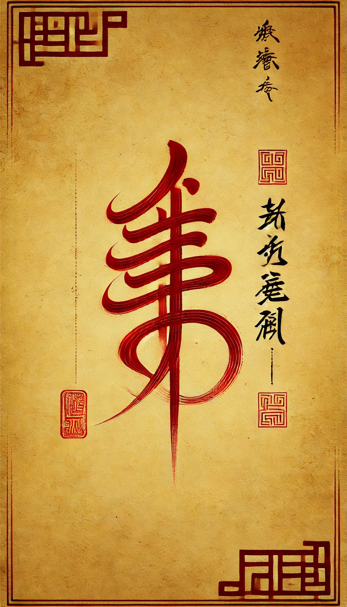
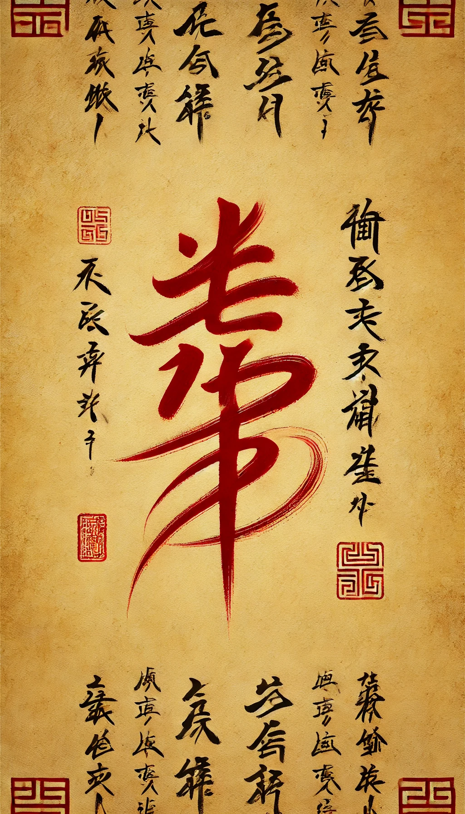
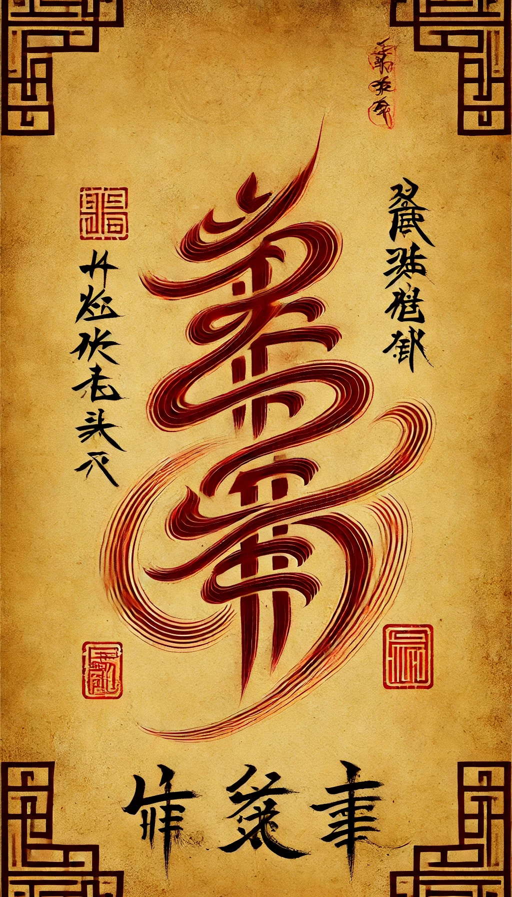

“One gives birth to Two, Two gives birth to Three, and Three gives birth to all things.”
What is your recent confusion?
Each return is a new beginning. No matter how recent times have been, new insights await you here......
We sense fluctuations in your energy. Is there anything during this mystical journey that you would like us to pray for or bless? Approach, and each step will bring you closer to the truth.
Write down your worries here and let them drift away. Whether it's life's troubles, work challenges, or inner confusion, we are here, ready to bring you peace and good fortune through the wisdom of Taoism. Let your heart find tranquility—may the Way of Heaven and Earth dissolve your sorrows and guide you toward a brighter future.
The academic pressure lately is honestly driving me to the brink! With the mid-term break coming up, every course seems to be piling on assignments and assessments all at once, leaving me utterly suffocated. I've been pushing myself to stay organized, trying to tackle each task systematically, but no matter how hard I try, I just can't focus. Everything around me seems to be conspiring to distract me, making it impossible to settle down and concentrate! This constant pressure feels like an invisible wall standing in my way, shoving me closer to the edge every day. I'm exhausted, frustrated, and overwhelmed, like I'm barely holding on.
I just need a bit of strength and confidence, something to clear my mind so I can push through this, grit my teeth, and break free from this crushing weight! These endless assignments, assessments, and even all the distractions—please, just give me some relief! I need a chance to get my footing back and escape this relentless cycle. Just a little support to get me through these chaotic, maddening days!
LOADING............



Take a deep breath, CC, feel which rune is calling to you, and choose it to lead your journey.
Congratulations on successfully selecting the rune that resonates with your soul, a path illuminated by the hand of fate. Your wisdom and intuition will lead you to unprecedented success and enlightenment. To further solidify this sacred connection, we recommend that you print this rune and the accompanying blessing scripture. In a quiet and well-lit environment, calm your mind and begin to transcribe the blessing scripture below. Through this process, deepen the connection between your spirit and the rune while also finding tranquility and focus in each stroke of your writing.
The Scripture of Serene Wisdom
From the boundless Dao, the source of harmony and peace,
Hear the seeker of knowledge, amidst the turbulence of scholarly trials.
As the ancient pines stand unwavering on the sacred mountains,
Grant this diligent student the strength to remain steadfast.
When myriad tasks like autumn leaves swirl and cloud the path,
Bestow clarity of mind, like the calm waters reflecting the moon's tranquil light.
As distractions arise like the morning mist,
May they dissolve under the gentle gaze of the rising sun.
Inscribe within the heart the virtues of jade—purity, resilience, and balance,
Foster within the spirit the confidence of the great dragons soaring through endless skies.
Through the sage's wisdom, ignite the inner light that guides through darkness,
With each step taken, let the path be illuminated, leading to peace and fulfillment.
Bless this journey through the gates of knowledge,
With the celestial harmony of the Dao resonating deeply,
Fulfilling the quest with serenity and profound success.
Lao Zi Said:
1. “The Tao that can be spoken is not the eternal Tao; the name that can be named is not the eternal name. The nameless is the origin of Heaven and Earth; the named is the mother of all things.”
2. “When all under Heaven recognize beauty as beauty, there arises the recognition of ugliness. When all recognize goodness as goodness, there arises the recognition of what is not good.”
3. “Being and non-being produce each other; difficult and easy complete each other; long and short contrast each other; high and low complement each other; sound and voice harmonize with each other; front and back follow each other. This is the eternal way.”
4. “Heaven and Earth are impartial; they regard all things as straw dogs. The Sage is impartial; he regards the people as straw dogs.”
5. “Heaven and Earth endure because they do not live for themselves, and thus they can last forever. Therefore, the Sage puts himself last and finds himself in the lead; he is detached from himself and finds himself preserved. Is it not because he is selfless that he can achieve fulfillment?”
I've been facing a lot of academic pressure recently, with mid-break approaching, and every course has a lot of assessments, which makes me feel overwhelmed. I'm trying to organise myself to complete each task systematically, but I often get distracted and can't focus. Please grant me the confidence to get through these stressful days.
I've been facing a lot of academic pressure recently, with mid-break approaching, and every course has a lot of assessments, which makes me feel overwhelmed. I'm trying to organise myself to complete each task systematically, but I often get distracted and can't focus. Please grant me the confidence to get through these stressful days.
've been facing a lot of academic pressure recently, with mid-break approaching, and every course has a lot of assessments, which makes me feel overwhelmed. I'm trying to organise myself to complete each task systematically, but I often get distracted and can't focus. Please grant me the confidence to get through these stressful days.